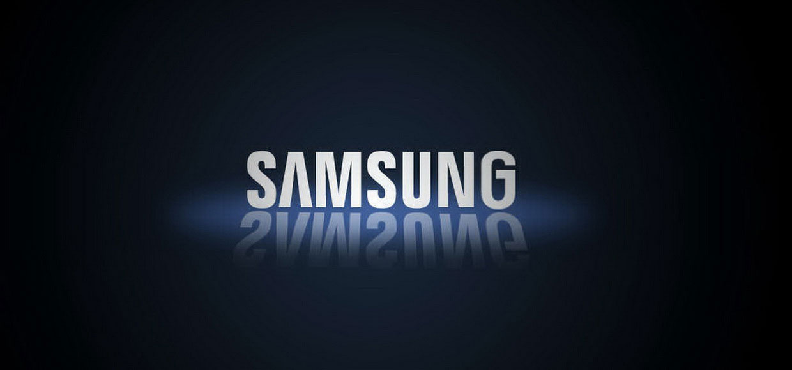
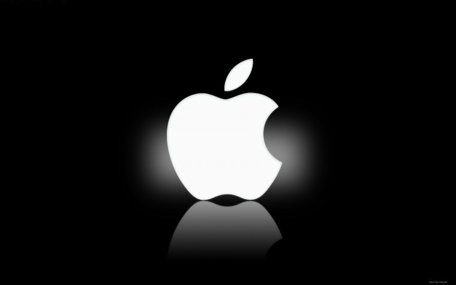
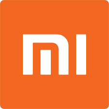
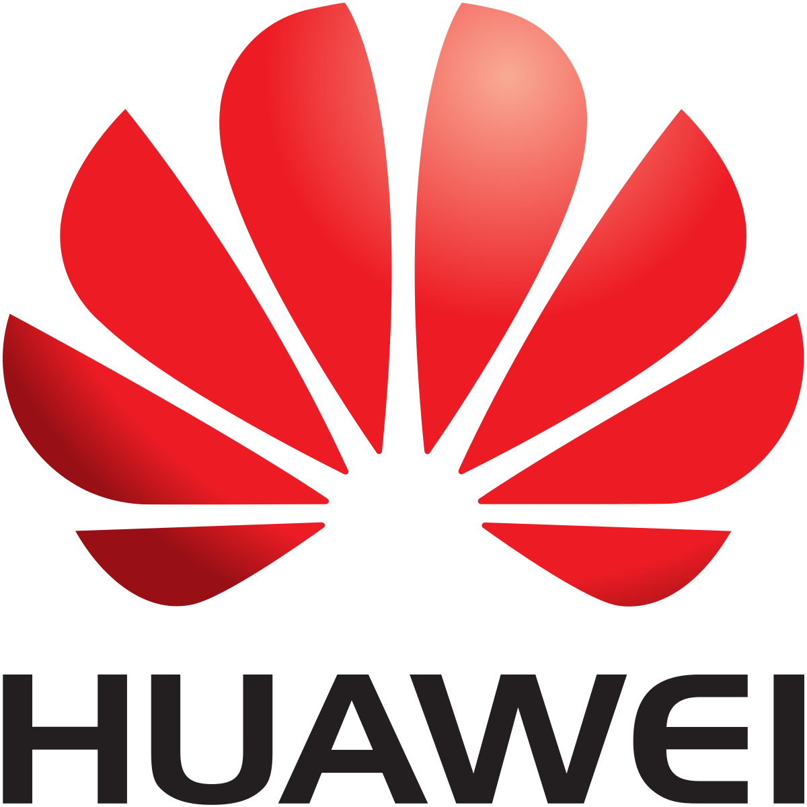

Hello you on site where can be fount kompaniy

Samsung є чим пишатися: корейська компанія не раз ставала новатором, випереджаючи інших технологічних гігантів, включаючи Apple. На початку шляху Samsung продавала продукти харчування і навіть текстиль. Хто б міг подумати, що до кінця століття компанія стане передовим виробником електроніки? В історії Samsung є багато інших цікавих фактів. Закривай Google, ми вже зібрали двадцятку найцікавіших. 1. У перекладі з корейської “Samsung” означає «три зірки»
В наш час, важко знайти людину, яка б не знала про компанію Apple. Продукція цієї компанії семимильними кроками завоювала, та продовжує завойовувати серця відданих фанів по всьому світу. Apple Inc. (apple в перекладі з англ. – «яблуко») – американська корпорація, виробник персональних і планшетних комп'ютерів, аудіоплеєрів, телефонів, програмного забезпечення. Один з піонерів в області персональних комп'ютерів і сучасних багатозадачних операційних систем з графічним інтерфейсом. Завдяки інноваційним технологіям та естетичному дизайну, корпорація Apple створила унікальну репутацію, порівнянну з культом, в індустрії споживчої електроніки. Протягом 2014 року компанія займає перше місце в світі за ринковою капіталізацією. 1 квітня 1976 року, в День Дурня, офіційно почалася писатися історія, тоді ще нікому невідомої компанії – Apple Computer, Inc. Правильніше кажучи, тоді це було всього лише партнерство між трьома чоловіками: Стівом Джобсом, Стівом Возняком та Рональдом Уейном, які зібрали в середині 1970-х свій перший персональний комп'ютер на базі процесора MOS Technology 6502 — Apple I і вирішили його продавати.
Xiaomi стартувала саме як Інтернет-компанія без виробничих потужностей, смартфонів, планшетів та інших фізичних продуктів. Xiaomi створила оболонку MIUI і просувала її в магазині Android, коли фанатів MIUI по всьому світу стало достатньо - компанія взялася за виробництво своїх смартфонів. 2 Факт другий: Xiaomi робить ноутбук Поки ринок смартфонів повільно рухається до точки рівноваги, китайська Xiaomi шукає для себе нові напрямки. Компанія Inventec, яка збирає ноутбуки, офіційно підтвердила той факт, що Xiaomi готує свій ноутбук, запуск відбудеться вже в 2016 році. 3 Факт третій: Xiaomi в Книзі Рекордів Гіннесса
Компания Huawei существует уже более 30 лет. За это время производитель выпустил несколько миллионов смартфонов, принесших бренду мировую популярность. Сейчас корпорация выпускает смарт устройства, маршрутизаторы, терминалы и др. Если вас интересуют необычные факты о крупнейших компаниях, то эти 10 фактов о Huawei для вас.